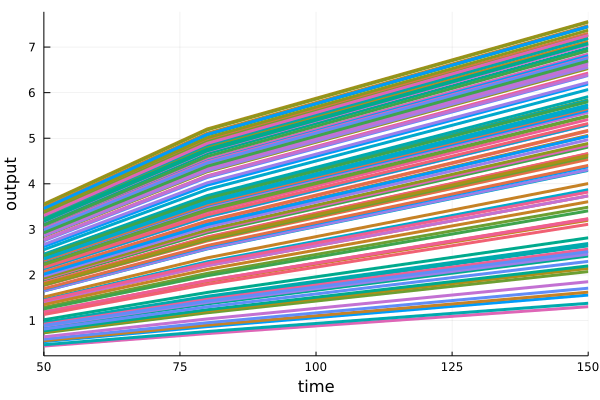

Monte-Carlo. Statistics calculation
Monte-Carlo simulations in HetaSimulator can be run using the mc method. It can be applied for: single scenario, series of scenarios and the whole platform.
_Before start be sure you have the latest HetaSimulator.jl version. If you don't have it reinstall using the Julia environment.
] # switch to Pkg mode
add HetaSimulatorWorking example
This lesson uses the following modeling code.
File can be downloaded here: index.heta
comp1 @Compartment .= 1.1;
comp2 @Compartment .= 2.2;
a @Species { compartment: comp1, output: true } .= 10;
b @Species { compartment: comp1, output: true } .= 0;
c @Species { compartment: comp1, output: true } .= 1;
d @Species { compartment: comp2 } .= 0;
r1 @Reaction { actors: a => b };
r2 @Reaction { actors: b + c <=> d };
r1 := k1 * a;
r2 := k2 * b * c - k3 * d;
k1 @Const = 1e-3;
k2 @Const = 1e-4;
k3 @const = 2.2e-2;
// test
sw1 @TimeSwitcher {start: 50};
a [sw1]= a + 1;
//sw2 @TimeSwitcher {start: 100};
//b [sw2]= 0;
//sw3 @DSwitcher {trigger: a <= 9};
//a [sw3]= a + 2;
//ss1 @StopSwitcher {trigger: t > 10};Create index.heta file with the contend and place it into the working directory.
Load the platform into the Julia environment. You should clarify the path to the modeling platform as the first argument.
using HetaSimulator, Plots
using Distributed # to use parallel simulations
platform = load_platform(".")
model = platform.models[:nameless]Model contains 3 constant(s), 8 record(s), 1 switcher(s).
Constants: k1, k2, k3
Records: comp1, comp2, a, b, c, d, r1, r2
Switchers (events): sw1Single scenario simulations
Create two scenarios as follows.
mcscn1 = Scenario(
model,
(0., 200.);
parameters = [:k1=>0.01]
)
mcscn2 = Scenario(
model,
(0., 200.);
parameters = [:k1=>0.02]
)The scenarios updates the parameter k1 value (@Const component in model). The observables vector is not set, so outputs will be taken from default set: a, b, c.
Monte-Carlo simulations mc can be used to simulate single scenario mcscn1 and plot results. The second argument in mc is the distribution for all independent parameters. The format of the argument is the vector of pairs where the first element is parameter id and the second one is the distribution rule. You can also set the Float64 value of a parameter here and this rewrites the value in a model without putting variability. The third argument is the number of Monte-Carlo simulations to do.
mcsim1 = mc(mcscn1, [:k1=>Uniform(1e-3,1e-2), :k2=>Normal(1e-3,1e-4), :k3=>Normal(1e-4,1e-5)], 100, saveat = [50., 80., 150.])We can limit the components for visualization with vars argument in plot.
plot(mcsim1, vars=[:b])
Monte-Carlo results can also be transformed into DataFrame.
DataFrame(mcsim1, vars=[:a, :b])Multiple scenarios simulations
In the same way as it was done for sim method we can also run mc for multiple scenarios. The returned object will be of type MCResult.
mcsim2 = mc(
[:mc1=>mcscn1,:mc2=>mcscn2],
[:k1=>0.01, :k2=>Normal(1e-3,1e-4), :k3=>Uniform(1e-4,1e-2)],
100
)
plot(mcsim2)Results of simulations can be transformed into DataFrame too.
mc_df2 = DataFrame(mcsim2)Monte-Carlo for whole platform
Scenarios for mc can also be loaded from CSV file.
Create file scenarios.csv in the same directory and fill it with the data.

File can be downloaded here: scenarios.csv
Load it as a scenarios table.
scn_csv = read_scenarios("./scenarios.csv")
add_scenarios!(platform, scn_csv)Apply mc for the platform which is the same as simulations for all Scenarios of the platform.
mcplat = mc(
platform,
[:k1=>0.01, :k2=>Normal(1e-3,1e-4), :k3=>Uniform(1e-4,1e-2)],
100
)
plot(mcplat)
Using pre-generated parameter set
In many practical cases it will be more useful to generate random parameters and run simulations in two steps. It is possible to do (1) creating DataFrame with parameter sets and (2) using it as an argument for mc method.
Parameter set can be created using the base DataFrame constructor.
mcvecs0 = DataFrame(k1=0.01, k2=rand(Normal(1e-3,1e-4), 50), k3=rand(Uniform(1e-4,1e-2), 50))Or it can be loaded from CSV file.
File can be downloaded here: params.csv

mcvecs = read_mcvecs("./params.csv")100×3 DataFrame
Row │ k1 k2 k3
│ Float64 Float64 Float64
─────┼──────────────────────────────────────
1 │ 0.00904655 0.00109494 0.00938817
2 │ 0.00342413 0.000952441 0.00274764
⋮ │ ⋮ ⋮ ⋮
100 │ 0.00318838 0.00106162 0.000996487
97 rows omittedThis DataFrame can be used as the second argument in mc.
mcv1 = mc(
mcscn1,
mcvecs
)
plot(mc1)
Monte-Carlo statistics
Monte-Carlo results can be used to calculate some characteristics which will be called "statistics".
There are some standard methods borrowed from DiffEq.jl package (see more here https://diffeq.sciml.ai/stable/features/ensemble/#Summary-Statistics).
See below several methods that calculates statistics for some particular time point.
timestep_mean(mcv1,2)
timepoint_mean(mcv1,80)
# median
timestep_median(mcv1,2)
timepoint_median(mcv1,80)
# meanvar
timestep_meanvar(mcv1,2)
timepoint_meanvar(mcv1,80)
# meancov
timestep_meancov(mcv1,2,3)
timepoint_meancov(mcv1,80.,150.)
# meancor
timestep_meancor(mcv1,2,3)
timepoint_meancor(mcv1,80.,150.)
# quantile
timestep_quantile(mcv1,0.95,2)
timepoint_quantile(mcv1,0.95,80.)The next methods calculates statistics for all time points.
timeseries_steps_mean(mcv1) # Computes the mean at each time step
timeseries_steps_median(mcv1) # Computes the median at each time step
timeseries_steps_quantile(mcv1,0.95) # Computes the quantile q at each time step
timeseries_steps_meanvar(mcv1) # Computes the mean and variance at each time step
timeseries_steps_meancov(mcv1) # Computes the covariance matrix and means at each time step
timeseries_steps_meancor(mcv1) # Computes the correlation matrix and means at each time stepAnd finally there is an example of statistics summary and visualization.
# Ensemble Summary
ens = EnsembleSummary(mcsim1;quantiles=[0.05,0.95])
plot(ens)
Final remarks
If you are going to use "statistics" methods you should always set the
saveatargument inmc.If you run
mcwith parameters generated online, i.e. without pre-generated set currently you cannot obtain the input parameters values directly. This will be fixed in one of future releases. Before that if you need them use pre-generation.